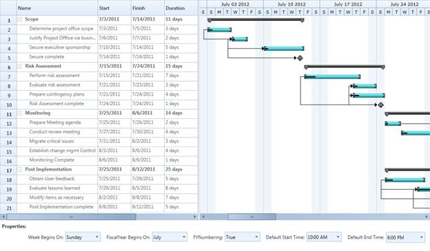

This feature allows you to set your own schedule for the entire project. Using this feature you can customize the calendar as per the organization’s requirement. Currently Essential Gantt provides the following properties of the schedule to customize the calendar:
· Week Begins On – Gets or sets the starting day of a week in the Schedule
· Fiscal Year Begin On – Gets or sets the starting month of a Fiscal Year
· Is FY Numbering Enabled – Gets or sets the FY Numbering to true or false in the Schedule
· Default Start Time – Gets or sets the task starting time of the day.
· Default End Time – Gets or sets the task ending time of the day.
Currently Default Start Time and Default End Time will reflects only in the Chart Background Panel.
Use Case Scenarios
You can use this when you want to change the schedule as needed. For example if April to March is your financial year, you can set this as your fiscal year and schedule the tasks accordingly.
You can also use this to schedule the works that have different week cycle. For example if your organization follows the week cycle from Wednesday to Tuesday, you can achieve this using this feature.
Properties
Table 2: Properties Table
|
Property |
Description |
Type |
Data Type |
Reference links |
|
WeekBeginsOn |
Gets or sets the starting day of a week in the project schedule. By default this is set to Sunday.
|
DependencyProperty |
Enum |
N/A |
|
FiscalYearBeginsOn |
Gets or sets the starting month of a fiscal year. By default this is set to January |
DependencyProperty |
Enum |
N/A |
|
IsFYNumberingEnabled |
Gets or sets the Fiscal Year Numbering. When this property changed it will be reflected in the schedule.
By default FY Numbering is set to false. |
Dependency Property |
bool |
N/A |
|
DefaultStartTime |
Gets or sets the task starting time in a day. This is based on the GanttTime class of the Gantt control.
By default this is set to 9.00 AM |
Dependency Property |
GanttTime |
N/A |
|
DefaultEndTime |
Gets or sets the task ending time in a day. This is based on the GanttTime class of the Gantt control.
By default this is set to 6.00 PM |
Dependency Property |
GanttTime |
N/A |
Adding Calendar Customization to an Application
Define the value to the weekdays, months, FY Numbering, default start time and default end time as required and assign it to the appropriate APIs in the Gantt.
The following code illustrates this:
|
[XAML]
<sync:GanttControl Grid.Row="1" x:Name="Gantt"> <sync:GanttControl.TaskAttributeMapping> <sync:TaskAttributeMapping TaskIdMapping="Id" TaskNameMapping="Name" StartDateMapping="StDate" ChildMapping="ChildTask" FinishDateMapping="EndDate" DurationMapping="Duration" ProgressMapping="Complete" PredecessorMapping="Predecessor"> </sync:TaskAttributeMapping> </sync:GanttControl.TaskAttributeMapping> </sync:GanttControl>
|
|
[C#]
// To Set Week BeginsOn
Gantt.WeekBeginsOn = DayOfWeek.Wednesday;
// To Set Fiscal Year starting Month
Gantt.FiscalYearBeginsOn = Month.July;
// To Set FY Numbering
Gantt.IsFYNumberingEndbled = true;
// To Set Default Start Time
Gantt.DefaultStartTime = new GanttTime() { Hour = 10};
// To Set Default End Time Gantt.DefaultEndTime = new GanttTime() { Hour = 6};
|

Figure 30: Customized Calender
Samples Link
To view samples:
1. Select Start -> Programs -> Syncfusion -> Essential Studio x.x.xx -> Dashboard.
2. Click Run Samples for Silverlight under User Interface Edition panel .
3. Select Gantt.
4. Expand the Interactive Features item in the Sample Browser.
5. Choose the Calendar Customization sample to launch.